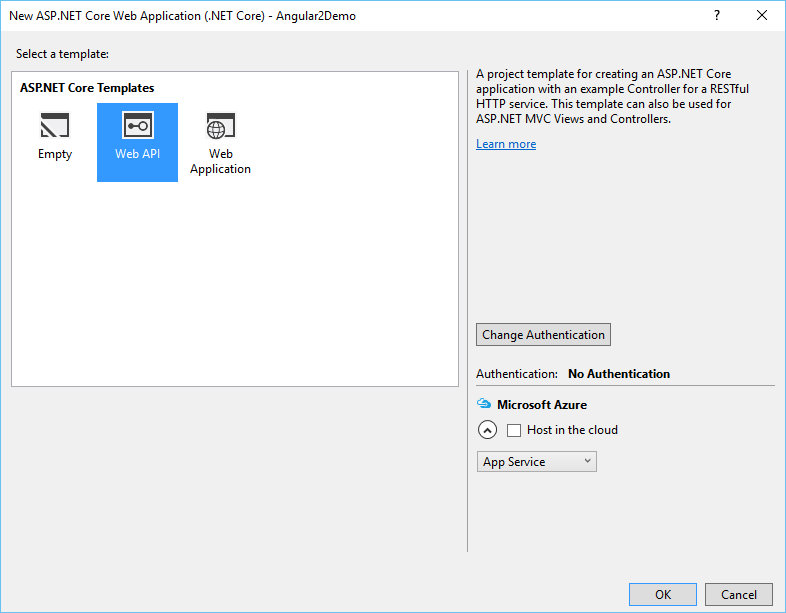
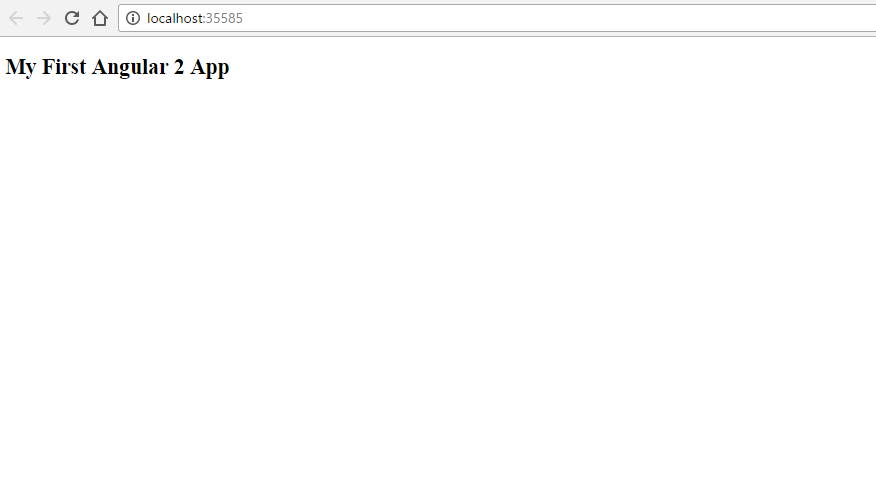

ASP.NET Core 1.0 - How to configure Angular2 with TypeScript
This article will show how to configure Angular 2 and TypeScript in a ASP.Net Core based API
STEP 1 - Make sure you have installed the prerequisites
Without these requisites, application will not run.
- Visual Studio 2015 Update 3. Note that Update 2 is not enough. You need Update 3, because it fixes some issues with NPM, plus it’s a prerequisite for TypeScript 2.0.
- .NET Core 1.0.1
- TypeScript 2.0 for Visual Studio 2015. If Visual Studio keeps complaining Cannot find name 'require', it’s because you forgot to install this.
- Node.js version 4 or later
STEP 2 - Create ASP.NET Core Web Application
Go to Visual Studio’s File New Project menu, expand the Web category, and pick ASP.NET Core Web Application like on the image below

Select the template Web API:

STEP 3 - Prepare Web Application to run Angular 2
At this point, we have our backend part ready. Let’s setup the frontend.
A Web API project can't serve static files like JavaScripts, CSS styles, images, or even HTML files. Therefore we need to add a reference to Microsoft.AspNetCore.StaticFiles in the project.json:
- "Microsoft.AspNetCore.StaticFiles": "1.0.0 ",
And in the startup.cs, we need to add the following line, just before the call of UseMvc().
- app.UseStaticFiles();
Another important thing we need to do in the startup.cs is to support the Routing of Angular 2. If the Browser calls a URL that doesn't exist on the server, it could be an Angular route. Especially if the URL doesn't contain a file extension.
Just before we call UseStaticFiles() insert the following code:
app.Use(async (context, next) =>
{
await next();
if (context.Response.StatusCode == 404
&& !Path.HasExtension(context.Request.Path.Value))
{
context.Request.Path = "/index.html";
await next();
}
});
app.Use(async (context, next) =>
{
await next();
if (context.Response.StatusCode == 404
&& !Path.HasExtension(context.Request.Path.Value))
{
context.Request.Path = "/index.html";
await next();
}
});
Now we prepared the ASP.NET Core application to start to follow the angular.io tutorial.
- You need to create tsconfig.json which is the TypeScript compiler configuration file. It guides the compiler to generate JavaScript files.
{
"compilerOptions": {
"target": "es5",
"module": "system",
"moduleResolution": "node",
"sourceMap": true,
"emitDecoratorMetadata": true,
"experimentalDecorators": true,
"removeComments": false,
"noImplicitAny": false
},
"exclude": [
"node_modules",
"typings/main",
"typings/main.d.ts"
]
}
{
"compilerOptions": {
"target": "es5",
"module": "system",
"moduleResolution": "node",
"sourceMap": true,
"emitDecoratorMetadata": true,
"experimentalDecorators": true,
"removeComments": false,
"noImplicitAny": false
},
"exclude": [
"node_modules",
"typings/main",
"typings/main.d.ts"
]
}
- Create a typings.json file in your project folder angular2-demo as shown below:
{
"globalDependencies": {
"core-js": "registry:dt/core-js#0.0.0+20160602141332",
"jasmine": "registry:dt/jasmine#2.2.0+20160621224255",
"node": "registry:dt/node#6.0.0+20160621231320"
}
}
{
"globalDependencies": {
"core-js": "registry:dt/core-js#0.0.0+20160602141332",
"jasmine": "registry:dt/jasmine#2.2.0+20160621224255",
"node": "registry:dt/node#6.0.0+20160621231320"
}
}
- Add package.json file to your project folder with the below code:
package.json
{
"name": "angular2-demo",
"version": "1.0.0",
"scripts": {
"start": "concurrent \"npm run tsc:w\" \"npm run lite\" ",
"tsc": "tsc",
"tsc:w": "tsc -w",
"lite": "lite-server",
"typings": "typings",
"postinstall": "typings install"
},
"license": "ISC",
"dependencies": {
"angular2": "2.0.0-beta.7",
"systemjs": "0.19.22",
"es6-promise": "^3.0.2",
"es6-shim": "^0.33.3",
"reflect-metadata": "0.1.2",
"rxjs": "5.0.0-beta.2",
"zone.js": "0.5.15"
},
"devDependencies": {
"concurrently": "^2.0.0",
"lite-server": "^2.1.0",
"typescript": "^1.7.5",
"typings":"^0.6.8"
}
}
package.json
{
"name": "angular2-demo",
"version": "1.0.0",
"scripts": {
"start": "concurrent \"npm run tsc:w\" \"npm run lite\" ",
"tsc": "tsc",
"tsc:w": "tsc -w",
"lite": "lite-server",
"typings": "typings",
"postinstall": "typings install"
},
"license": "ISC",
"dependencies": {
"angular2": "2.0.0-beta.7",
"systemjs": "0.19.22",
"es6-promise": "^3.0.2",
"es6-shim": "^0.33.3",
"reflect-metadata": "0.1.2",
"rxjs": "5.0.0-beta.2",
"zone.js": "0.5.15"
},
"devDependencies": {
"concurrently": "^2.0.0",
"lite-server": "^2.1.0",
"typescript": "^1.7.5",
"typings":"^0.6.8"
}
}
Create a sub-folder called app/ inside your wwwroot project folder to the place Angular app components.
The files which you create need to be saved with .ts extension. Create a file called environment_app.component.ts in your app/ folder with the below code:
environment_app.component.ts
import {Component, View} from "angular2/core";
@Component({
selector: 'my-app'
})
@View({
template: '<h2>My First Angular 2 App</h2>'
})
export class AppComponent {
}
environment_app.component.ts
import {Component, View} from "angular2/core";
@Component({
selector: 'my-app'
})
@View({
template: '<h2>My First Angular 2 App</h2>'
})
export class AppComponent {
}
import {bootstrap} from "angular2/platform/browser"
import {AppComponent} from "./environment_app.component"
bootstrap(AppComponent);
import {bootstrap} from "angular2/platform/browser"
import {AppComponent} from "./environment_app.component"
bootstrap(AppComponent);
- Now create a index.html in your project folder angular2demo/ with the below code:
<!DOCTYPE html>
<html>
<head>
<title>Hello World</title>
<script src="https://cdnjs.cloudflare.com/ajax/libs/es6-shim/0.33.3/es6-shim.min.js"></script>
<script src="https://cdnjs.cloudflare.com/ajax/libs/systemjs/0.19.20/system-polyfills.js"></script>
<script src="https://code.angularjs.org/2.0.0-beta.6/angular2-polyfills.js"></script>
<script src="https://code.angularjs.org/tools/system.js"></script>
<script src="https://code.angularjs.org/tools/typescript.js"></script>
<script src="https://code.angularjs.org/2.0.0-beta.6/Rx.js"></script>
<script src="https://code.angularjs.org/2.0.0-beta.6/angular2.dev.js"></script>
<script>
System.config({
transpiler: 'typescript',
typescriptOptions: { emitDecoratorMetadata: true },
packages: {'app': {defaultExtension: 'ts'}}
});
System.import('/app/environment_main')
.then(null, console.error.bind(console));
</script>
</head>
<body>
<my-app>Loading...</my-app>
</body>
</html>
<!DOCTYPE html> <html> <head> <title>Hello World</title> <script src="https://cdnjs.cloudflare.com/ajax/libs/es6-shim/0.33.3/es6-shim.min.js"></script> <script src="https://cdnjs.cloudflare.com/ajax/libs/systemjs/0.19.20/system-polyfills.js"></script> <script src="https://code.angularjs.org/2.0.0-beta.6/angular2-polyfills.js"></script> <script src="https://code.angularjs.org/tools/system.js"></script> <script src="https://code.angularjs.org/tools/typescript.js"></script> <script src="https://code.angularjs.org/2.0.0-beta.6/Rx.js"></script> <script src="https://code.angularjs.org/2.0.0-beta.6/angular2.dev.js"></script> <script> System.config({ transpiler: 'typescript', typescriptOptions: { emitDecoratorMetadata: true }, packages: {'app': {defaultExtension: 'ts'}} }); System.import('/app/environment_main') .then(null, console.error.bind(console)); </script> </head> <body> <my-app>Loading...</my-app> </body> </html>
Angular will launch the app in the browser with our component and places it in a specific location on index.html.
STEP 5 - Run application

Resources
Angular2: http://www.angular2.com/
My personal blog: http://joaoeduardosousa.wordpress.com/